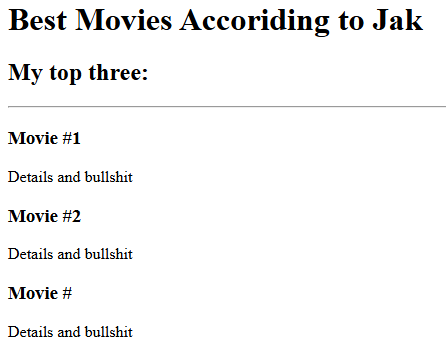
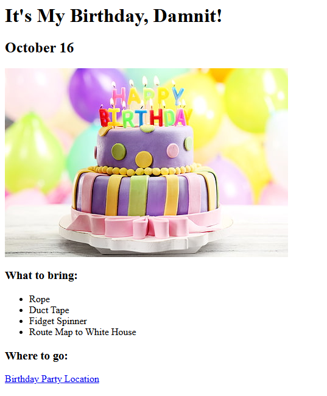

Jack H. Vink
jackhvink@gmail.com • 217-953-4486 • LinkedIn.com/in/jackvink
Detail-oriented professional with experience in customer service, technical support, and workflow coordination. Known for clear communication, accuracy, and reliability.
PROFESSIONAL EXPERIENCE
Technical Services Representative
- Provided Tier 2 technical support to field technicians servicing commercial beverage equipment.
- Interpreted complex wiring schematics and technical manuals via phone, email, and video chat.
- Documented interactions and resolutions using Salesforce CRM.
- Delivered accurate, first-time resolutions, reducing repeat inquiries and service delays.
Automotive Service Advisor
- Managed shop workflow, inventory, and scheduling to support productivity and service quality.
- Prepared service estimates, sourced parts, and documented vehicle concerns in repair orders.
- Coordinated with technicians to review diagnostics and explain recommendations to customers.
- Managed approvals, payments, scheduling, and follow-up to ensure customer satisfaction.
Remote Support Specialist
- Provided remote technical support for Star Micronics printers via phone, email, and chat.
- Troubleshot printer and basic operating system issues across Windows, macOS, and Linux.
- Created instructional guides to support customer self-service and reduce repeat contacts.
Technical Support Representative
- Provided phone-based technical support for Apple customers in a high-volume virtual call center.
- Troubleshot hardware, software, and Apple ID issues.
- Explained steps clearly and empathetically to users of all skill levels, maintaining detailed case notes.
Electronics Repair Technician
- Oversaw daily shop operations, ensuring quality diagnostics, repairs, and device testing.
- Trained staff on repair procedures, customer service standards, and new device technologies.
- Managed inventory, scheduling, and vendor relationships while maintaining strong customer satisfaction.
Quality Assurance Specialist
- Assisted in developing and refining quality assurance and audit procedures.
- Evaluated communications, documentation, and data entry for accuracy and compliance.
- Analyzed workflows to improve efficiency and recommend process changes.
- Supported customers and insurance agents through multiple communication channels.
- Researched, explained, and resolved Property & Casualty policy concerns.
Automotive Retail Specialist
- Advanced through customer service and warehouse coordination roles within a retail environment, overseeing staffing, scheduling, and workflow operations.
- Managed order fulfillment, inventory control, route planning, and fleet maintenance.
- Provided customer service and sales support for retail operations as needed.
- Recognized for reliability, a positive attitude, and consistently high-quality work.
VOLUNTEER WORK
Multimedia Specialist
- Led a website redesign to improve navigation, consistency, and user experience.
- Managed a site migration to improve performance, scalability, and asset organization.
- Created digital marketing content using Adobe Creative Suite for web, social, and print.
- Converted forms to fillable PDFs, streamlining document management processes.
EDUCATION
High School – General Studies (Diploma)
Trade School – Communications & Media
Jack H. Vink's Portfolio
Web Development Course Content
Movie Ranking Project
Birthday Invite Project
About Me Contact Me